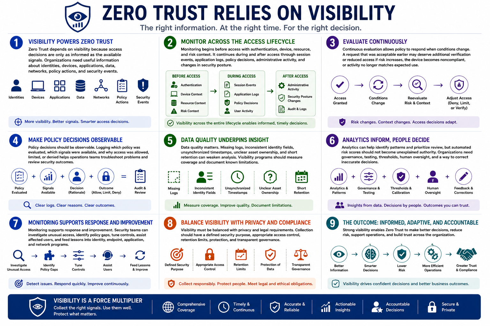

What Is Zero Trust?
Visibility and Continuous Monitoring
Connecting to LMS... Progress: in progress
Version 1.0 | Date: 2026-06-16 | Educational overview of Zero Trust concepts.

Narration
Zero Trust depends on visibility because access decisions are only as informed as the available signals. Organizations need useful information about identities, devices, applications, data, networks, policy actions, and security events.
Monitoring begins before access with authentication, device, resource, and risk context. It continues during and after access through session events, application logs, policy decisions, administrative activity, and changes in security posture.
Continuous evaluation allows policy to respond when conditions change. A request that was acceptable earlier may deserve additional verification or reduced access if risk increases, the device becomes noncompliant, or activity no longer matches expected use.
Policy decisions should be observable. Logging which policy was evaluated, which signals were available, and why access was allowed, limited, or denied helps operations teams troubleshoot problems and review security outcomes.
Data quality matters. Missing logs, inconsistent identity fields, unsynchronized timestamps, unclear asset ownership, and short retention can weaken analysis. Visibility programs should measure coverage and document known limitations.
Analytics can help identify patterns and prioritize review, but automated risk scores should not become unexplained authority. Organizations need governance, testing, thresholds, human oversight, and a way to correct inaccurate decisions.
Monitoring supports response and improvement. Security teams can investigate unusual access, identify policy gaps, tune controls, assist affected users, and feed lessons into identity, endpoint, application, and network programs.
Visibility must be balanced with privacy and legal requirements. Collection should have a defined security purpose, appropriate access control, retention limits, protection, and transparent governance.